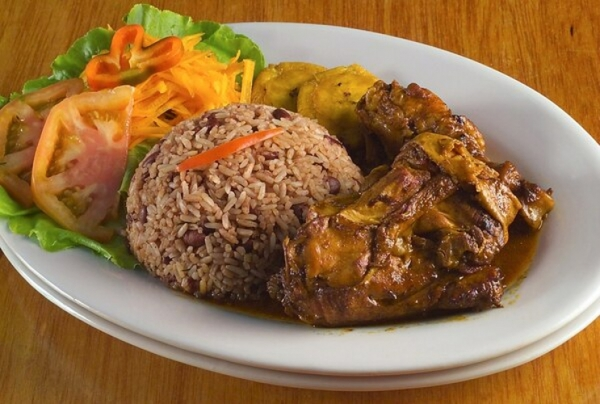

Rice and Beans

Descripcion
Ingredientes
- 1 taza de frijoles rojos cocinados
- 3 tazas de arroz blanco cocinado
- 1 cebolla picada finamente
- 1 chile panameño
- 4 ajos triturados
- 1 cucharada de jengibre rallado
- 3 ramas de tomillo fresco
- 1 ½ taza de leche de coco
- ½ taza de caldo de pollo o pescado
- 2 cucharadas de aceite vegetal
- Sal y pimienta c/n
Instrucciones
- En una sartén, sofría la cebolla, el chile, el ajo y el jengibre.
- Luego incorpore la leche de coco y el caldo. Sazone con sal, pimienta y tomillo.
- Añada el arroz y los frijoles y mezcle todos los ingredientes muy bien.
- Cocine por unos pocos minutos hasta que el líquido evapore.
- Sirva acompañado de pollo o pescado, patacones y ensalada.